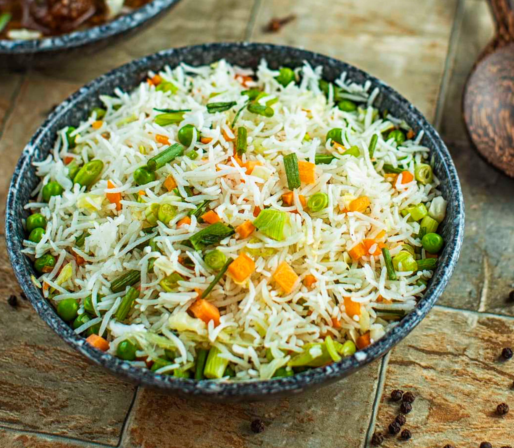

This dish combines the nutty flavor of brown rice with the fresh taste of bell peppers, baby peas, and other vegetables.
Ingredients
- 2 pieces carrots
- 3 cups water
- Sugar snap peas
- Baby Corn
- Olive Oil
- Salt to taste
- ! Small white oinion
- 3 cup pre-cooked rice
- 3 tbsp. Soy sauce
Instructions
- Cut your vegetables (carrots, sugar snap peas and baby corn you can always substitute with vegetables of your choice) up to the size that you prefer. I try to keep them all about the same size or shape just because it looks nice. So if I am using green beans for example, I would cut the carrot into strips instead.
- The stir-frying bit does not take very long because most vegetables do not need more than five minutes to cook so prepare the rice first. Or even better, make extra when using rice for a different meal, then use the leftovers for a stir-fry like this the next day. So assuming you have the rice ready to go, and the vegetable also cut up and ready to go,start with an onion in some cooking oil and water ( I always add water when I want the onions to stay soft and get cooked without burning)
- Once the onions had softened enough, I add the carrots. When adding the vegetables, start with the one that needs the most amount of time to cook. In my case it is the carrots.
- After about 2 minutes, I added the baby corn and sugar snap peas. They cook in about the same time.
- When they ready, salt them lightly, keeping in mind you wll be adding soy sauce, and they are ready for the rice
- Add in the rice. Add as much or as little as you want, one cut at a time till you get the rice to veggie ratio you like
- Then add some soy sauce, again, a little bit at a time, mixing in each portion slowly
- If using left over rice, or if your rice had already cooled down from cooking, wait a little while for it to warm up. Keep stirring it so that it does not stick to the bottom too much. Once it is warmed up it is ready to serve.
- Serve and enjoy
Return to top
Return to main page